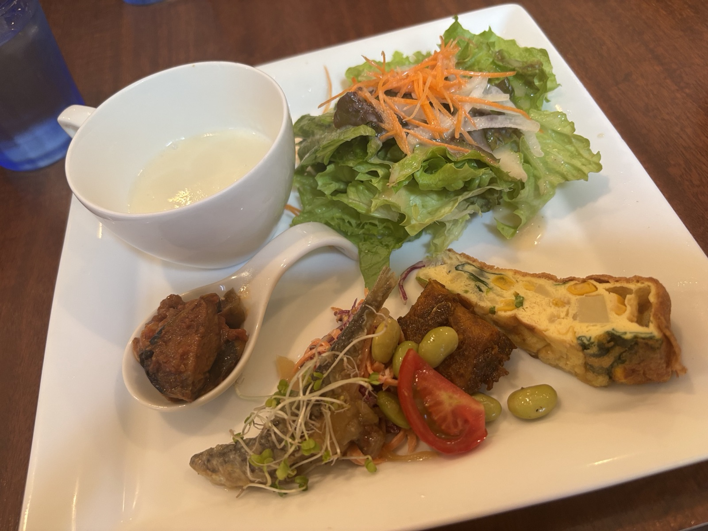
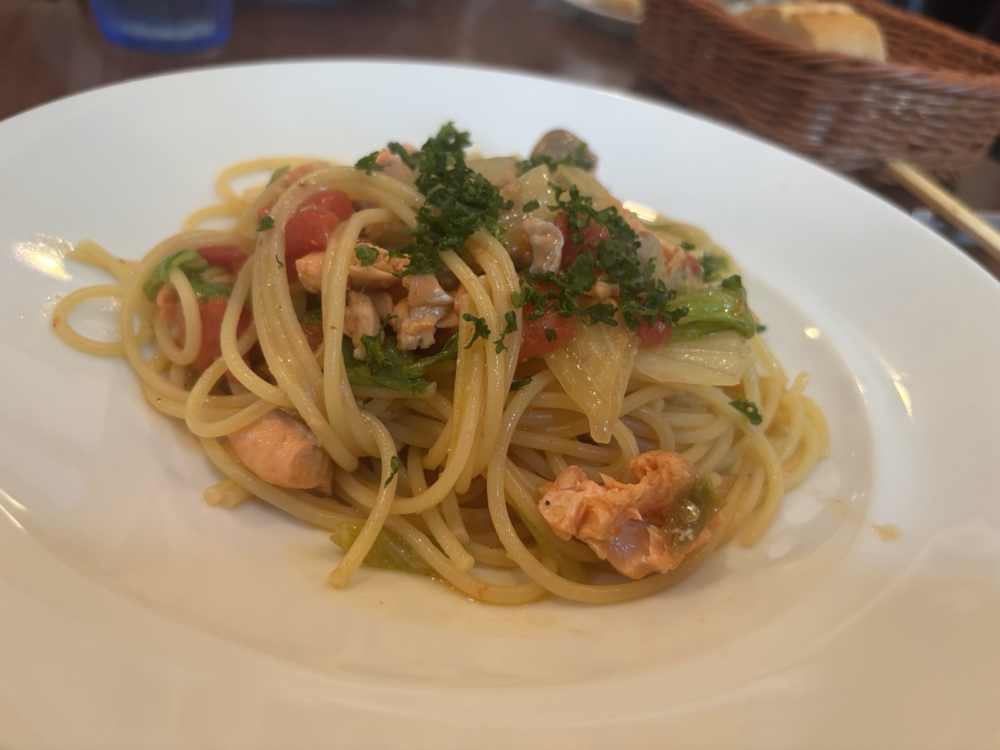
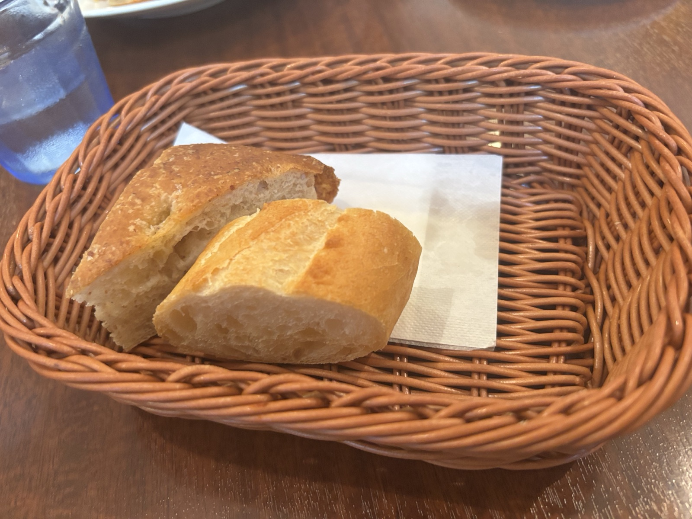
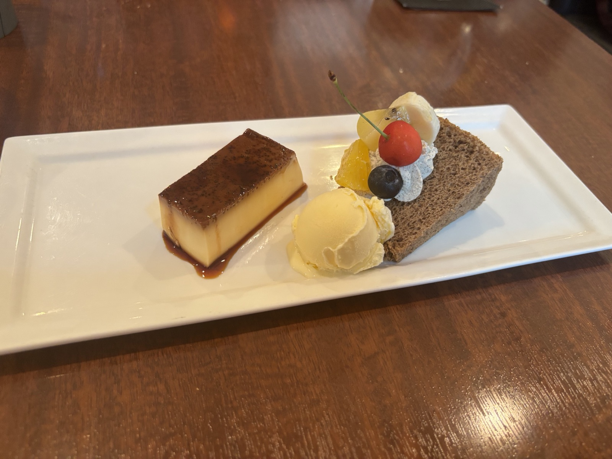
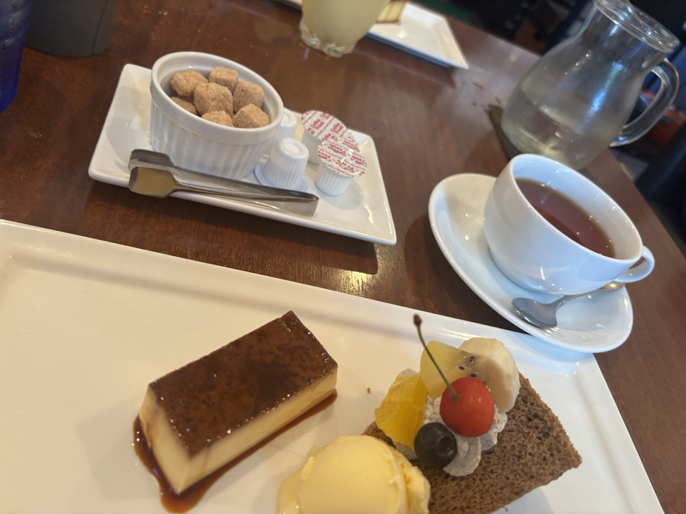
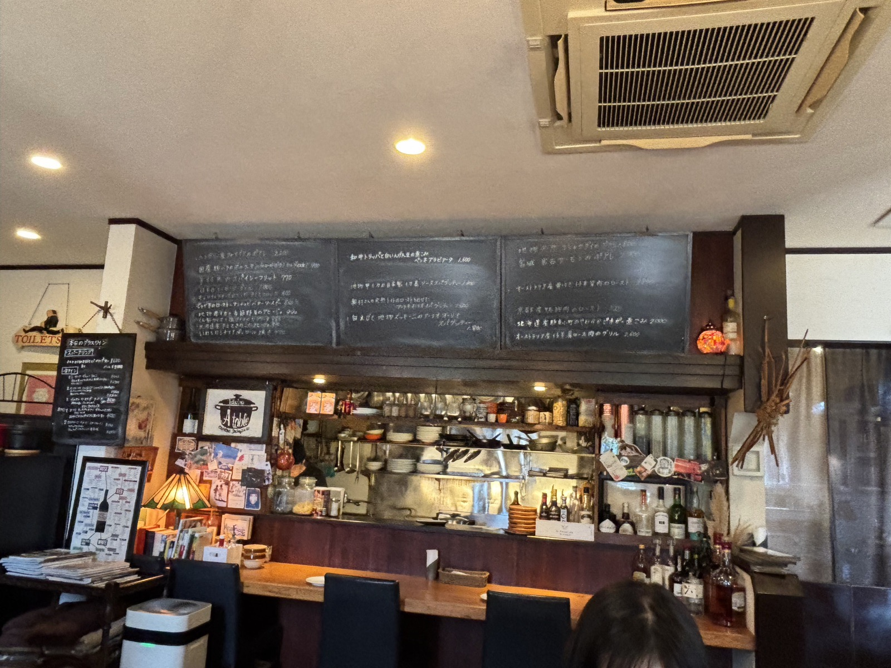

行ってきたシリーズ #01
Bistro A table（ビストロ ア・ターブル）
能美・寺井駅から徒歩3分。地産地消のカジュアルフレンチでいただく大満足のビストロパスタランチ






ビストロパスタランチを注文。まず出てきたオードブルの盛り合わせが豪華で、スープにサラダ、キッシュまで載っていて、この時点で「これはアタリだ」と確信。パスタはあさりとズッキーニのトマトソースとサーモンのパスタをそれぞれ。おかわりパンが1個50円という良心価格で、もちもちのフォカッチャを迷わずおかわりしました。最後のデザートも申し訳程度ではなく、プリン・シフォンケーキ・アイスの本気の盛り合わせ。この内容でこの価格はコスパ最高です。ごちそうさまでした。
| 名前 | Bistro A table（ビストロ ア・ターブル） |
|---|---|
| 場所 | 〒929-0123 石川県能美市中町申38-1 |
| アクセス | JR寺井駅から徒歩3分／駐車場あり |
| 営業時間 | Lunch 11:30〜15:00（L.O.14:00）／Dinner 18:00〜22:00（L.O.21:00） |
| 定休日 | 月曜日 |
| 行った日 | 2026年6月28日 |
| 公式サイト | a-table.info |
※営業時間・定休日は訪問時に公式サイトで確認した情報です。お出かけ前に最新情報をご確認ください。
📍 Googleマップで見る